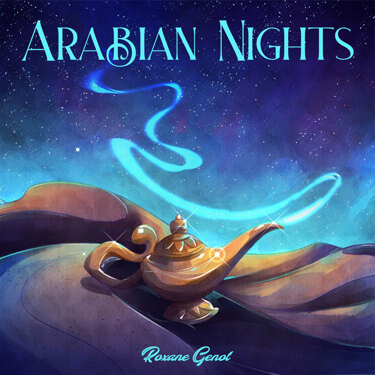

Arabian Night
Main Idea: The name of Arabian Night came from ?
Main Point: The tale of Aladdin originates from The Arabian Nights, a collection of enchanting Middle Eastern fairy tales. These stories were introduced to Europe through a French translation by Antoine Galland in 1704. Galland's popularized version included "Aladdin and his Magic Lamp," along with other tales like "Ali Baba and the Forty Thieves" and "The Seven Voyages of Sinbad the Sailor." Although not part of the original Arabic manuscript, Galland's additions gained immense popularity, leading to Aladdin's enduring legacy in literature. The story has been translated, adapted, and retold many times over the years, showcasing its timeless ability to captivate and entertain readers across generations.
